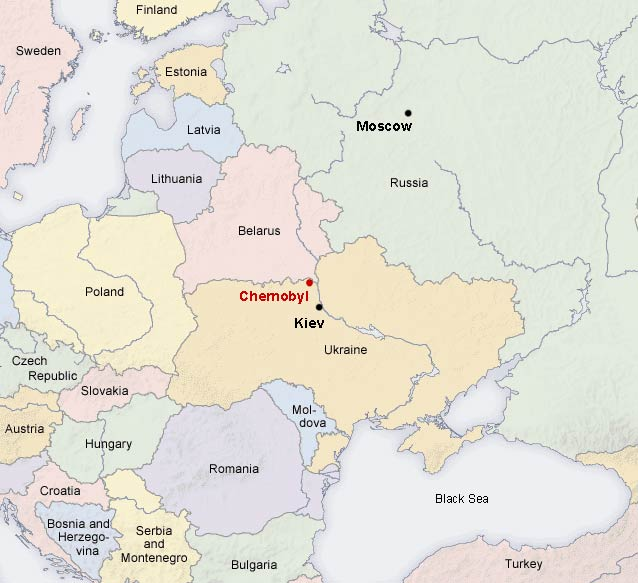
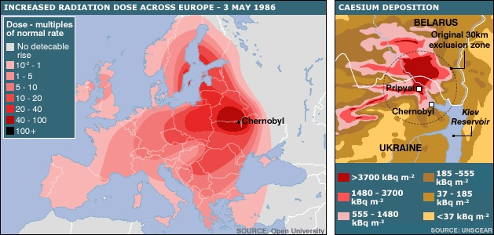
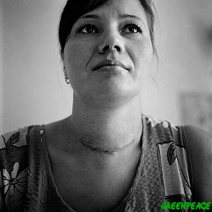
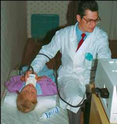
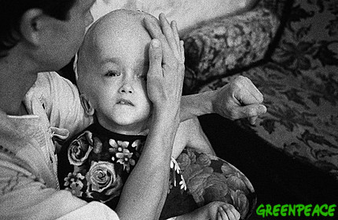

| METALS IN MEDICINE AND THE ENVIRONMENT | |||
| Metals | Health Consequences of Chernobyl | ||
|
History The Chernobyl nuclear power plant explosion occurred on Saturday, April 26, 1986 at 1:24 a.m. The plant, which was comprised of four nuclear reactors, referred to as units, caught on fire after an explosion in Unit 4. The unit had been shut down earlier in the day for routine maintenance, and while this work was being done, it was decided to also perform a series of precautionary tests. However, complications arose that resulted in two explosions in Unit 4 after the reactor experienced a power surge and overheated. The core and roof were destroyed, and fires quickly spread throughout the complex. The most destructive of these fires was the graphite fire which resulted in the dispersion of radionuclides and fission fragments into the atmosphere. (7) The fires were especially destructive to the building because it was not reinforced by a concrete shell like most other nuclear power plants. (2) The two major radioisotopes that were released were 131Iodine, which has a half-life of 8 days and 137Cesium, which has a half-life of 30 years. (3) Chernobyl is located in current day Ukraine, approximately 20 kilometers south of the country’s border with Belarus and 130 kilometers north of Kiev. The town of Chernobyl, located 15 kilometers away, had a population of about 12,500 at the time on the incident. The larger city of Pripyat was located about three kilometers away and was home to 49,000 inhabitants. The total population in the 30 kilometer radius of the plant was 115,000-135,000 people. Evacuation of Pripyat was relatively quick; by 2 p.m. the next day, residents were being told to leave. Later, everyone living within the 30 kilometer radius was evacuated. (3) An additional 230,000 people were told to leave surrounding highly contaminated areas in subsequent years. (8) The total area in which residents were evacuated from is referred to in the literature as the “exclusion zone”. It is estimated that there are currently 5 million people living in areas that are contaminated, that is, areas that have readings greater than 37 kBq/m2 of 137Cs, in Belarus, Ukraine, and Russia. (3) According to the International Atomic Energy Agency (IAEA) website, only the exclusion zone should continue to remain off-limits to visitors not wearing protective gear. Levels of 137Cs greater than 37 kBq/m2 were also measured in Austria, Bulgaria, Finland, Greece, Italy, Norway, Republic of Moldova, Slovenia, Sweden, and Switzerland. Areas in Europe that were affected were determined somewhat by wind conditions and rainfall immediately preceding the accident. (6)  Figure 1. Map of area (12)  Figure 2. Radiation maps (13) Health Effects of Chernobyl: Background Information To mark the twentieth anniversary of the Chernobyl accident in 2006, the IAEA and the World Health Organization (WHO) released parallel studies of the environmental and health consequences of the explosion. Both organizations were a part of the Chernobyl Forum which also encompassed the Food and Agriculture Organization of the United Nations (FAO), the United Nations Development Program (UNDP), the United Nations Environment Program (UNEP), the United Nations Office for the Coordination of Humanitarian Affairs (OCHA), the United Nations Scientific Committee on the Effects of Atomic Radiation (UNSCEAR), the World Health Organization and the World Bank, along with representatives of the governments of Belarus, Ukraine, and Russia. The IAEA states in their report that the purpose of the forum was to “generate authoritative consensual statements on the environmental and health affects attributable to radiation exposure arising from the accident.” (6) Several organizations criticized the report for downplaying the health consequences of radiation exposure from the Chernobyl accident. Most prominent among these groups was Greenpeace International, an anti-nuclear energy group based in the United Kingdom. They released a counter report which they claim contains more accurate information about the devastation that Chernobyl caused; according to their website, they used information that had never been published in the English language. (5) Because the original impetus for this project was viewing of the HBO documentary Chernobyl Heart, which portrayed the devastating effects of radiation in children, this case study will focus on the health consequences for civilians living in contaminated regions and those who were evacuated from the exclusion zone. Specific health conditions will be analyzed, with information presented from both sides. However, some information about the consequences for the plant workers and emergency relief providers is included below along with background information about the amounts of radiation received by affected populations. Approximately 400,000 evacuees left highly contaminated areas at some point between 1986 and 1987. In addition, 5 million people in Belarus, Ukraine, and Russia live in areas that have been deemed to be contaminated. (3) In terms of the radiation that these two populations are or were exposed to, the WHO report focuses on the effective dose of radiation received, which “characterizes the overall health risk due to any combination of radiation.” Effective dose is measured in millisieverts (mSv) and the WHO report states that the average annual dose of radiation worldwide due to background radiation is along the lines of 2.4 mSv. It is believed that in the period from 1986 to 2005, the average effective dose that people received in Belarus, Ukraine, and Russia from Chernobyl was 10-30 mSv. Those who were exposed to highly contaminated areas had an average effective dose of 50 mSv. Though this amount appears high, the WHO report states that inhabitants of India, Iran, Brazil, and China received effective doses of 100-200 mSv over a twenty year period due to high levels of background radiation in areas of these countries. The average annual dose that most people received due to Chernobyl was around 1 mSv, lower than the world wide average of 2.4 mSv. (3) Thyroid Cancer One of the first major health consequences of the Chernobyl accident was the appearance of “aggressive thyroid carcinomas” in children. (9) The major radiation dose responsible for the cancers seen in children was from 131I. This can be attributed to several causes. First, the presence of iodine deficiencies in significant numbers among the affected population caused an increased uptake of radioactive iodine. Second, 131I was taken up by grazing cows and heavily concentrated in their mammary epithelium. (9) Many people in the contaminated region owned their own cows and thus drank large amounts of contaminated milk. This was especially true for children, for whom milk was a major part of the diet. The IAEA has also theorized that children’s thyroid glands were more affected by 131I than adults even though they drank similar quantities of milk because their glands are much smaller, so the 131I was more concentrated. (6) Some preventative measures were taken immediately following the accident. Residents of the city of Pripyat received stable iodine tablets 6-30 hours after the explosion and it is believed that this decreased their rate of cancer by a factor of six. Had the government of the Soviet Union been able to provide more of these tablets to others living in the exclusion zone and encouraged people not to drink cow’s milk or eat leafy vegetables, another much smaller source of 131I, it is probable the number of thyroid cancers would have been drastically reduced. (11) According to Williams, the first reported cases of thyroid cancer caused by Chernobyl in 1990 were met with skepticism by the general population for several ill conceived reasons. First, it was generally accepted at the time that such cancers required a ten year latency period before detection. It was also believed that internal radiation doses from 131I, the major radionuclide involved in the children’s cancer, was not as carcinogenic as external doses of radiation. However, much of this information was based on studies of thyroid cancers in adults and animal models, not children. (9) From 1992-2002 the WHO reports that there were around 5,000 reported cases of thyroid carcinomas in those who were between ages of 0-18 in 1986. Fifteen deaths in Chernobyl affected populations have been recorded. (10) The most affected age group was children who were between the ages of 0-14 at the time of the accident. It is believed that in utero doses of 131I were much lower than those received by infants, and thus, these children have not shown a significant risk of developing thyroid cancer. This is also true of children conceived after the accident; because 131I half-life is just eight days, exposure had to occur relatively soon after emissions were released by the explosion. However, young adults in their early twenties (those who toddlers at the time) continue to show increased incidences of cancer. (11) Estimates from the UNDP suggest that the total number of cancers will be around 8,000. (4) Greenpeace’s report, like those presented by the WHO and IAEA, spent a considerable portion of text analyzing the presence of thyroid cancers in Chernobyl effected children. It came to the conclusion that “in reality, the number of childhood cancers caused by Chernobyl in Belarus, Russia, and Ukraine is much greater that indicated by the IAEA and/or the WHO.” (1) They attribute their higher numbers in part to the fact that radiation doses exceeded permissible dosage amounts for thyroids in “clean” regions of Ukraine. Thus, they counted cases in areas that were not considered by the IAEA and the WHO. (1) Greenpeace projects that there could be an additional 60,000 thyroid cancers diagnosed in the future, a much higher estimate than is suggested by any information found in the extensive WHO report. (2)  Figure 3. Thyroid cancer survivor (14)  Figure 4. Thyroid cancer diagnosis (15) Leukemia and other Solid Cancers After the atomic bomb was dropped on Hiroshima and Nagasaki, elevated risk of leukemia for exposed populations was demonstrated 2-5 years later. (11) According to the WHO populations living in contaminated areas after Chernobyl have demonstrated no such elevated risk of leukemia. Although some studies have shown an increased incidence of leukemia, the WHO claims “most [of these] studies had methodological limitations and lacked statistical power.” (3) In support of its stance, the WHO cites a 1995 study which found higher rates of leukemia in less contaminated areas. According to the WHO, Japanese survivors of the atomic bombs were on average exposed to doses of radiation that were much higher in a shorter of period of time, thus causing the dramatically increased rates of leukemia. (11) The WHO also claims that there is insufficient evidence of increased rates of solid, non-thyroid cancers, in either children or adults. However, they do note that cancers tend to have a latency period of 10-15 years and so discuss the need for further monitoring and study of affected populations. (11) In total, the WHO suggests there could be up to 9,000 excess cancer deaths resulting from Chernobyl radiation exposure. (2) This represents an increase in cancer rates of about 1-3%. (10) The information presented in the Greenpeace report presents an apparent contradiction to the reassurance of the WHO study. According to Greenpeace, “rates of various types of cancer increased significantly in Russia, Belarus, and Ukraine after the Chernobyl catastrophe.” (1) They claim that by 1992 there was a significant increase in the incidence of all forms of leukemia in the adult population of Belarus. They also cite evidence that purportedly shows a 40% increase in all cancers in Belarus, with most of these coming from Gomel, a highly contaminated region of the country. Gomel alone experienced a 52% increase in cancer according to this study. They also claim that there was an increase in blood cancers among evacuees who were living in Ukraine during this same time period. Greenpeace also claims that cancer mortality increased 12% after the accident and blame radiation. (1) Other related organizations claim that men have been most affected by tumors of the lungs, stomach, skin, and prostrate while women have been most affected by breast, uterine, stomach, and skin tumors. (4) Overall, Greenpeace predicts that there will eventually be 270,000 cancers and 93,000 excess cancer deaths due to Chernobyl, a significantly greater number than estimates made the Chernobyl Forum. (2) Reproductive and Hereditary Effects In their report, the WHO states that they have found no effects from radiation on fertility, stillbirths, adverse pregnancy outcomes, or delivery complications. (10) Although there has been an increase in congenital malformations in both contaminated and uncontaminated areas in Belarus, the WHO suggests improved reporting and documentation as a major cause rather than the Chernobyl accident. Lower birth rates in contaminated areas are ascribed to anxiety in the general population about the effects of radiation and the decreasing number of young people living in these regions. The WHO also notes that this anxiety about radiation has been one reason for increased medical abortions. (3) The WHO does cite inconclusive studies on mutation frequencies in “expanded single tandem repeats” (ESTR) that correspond with low radiation doses. However, these are regions of “junk” DNA, so any deleterious health effects due to possible mutations remain at best questionable. (11) The WHO also reports that infant mortality was higher in Ukraine before Chernobyl (1981-1985) than after. A study of contaminated versus uncontaminated areas showed no statistically significant increases. Another study showed no difference in mortality between exposed and unexposed children in Ukraine. No comparable data was available for Belarus or Russia. In terms of congenital malformations, a 1999 study showed a greater increase in uncontaminated regions versus contaminated areas. There has also been no evidence of increased levels of mental retardation of those exposed to radiation in utero. (11) Greenpeace claims to have found evidence of “noticeably higher chromosomal aberrations.” (1) They also cite increased numbers of genital and sexual development abnormalities in the effected Belarusian population. Claims are also made that exposed children in Belarus have been shown to demonstrate lower IQ levels and display a “tendency towards development of mild mental retardation.” (1) Children of liquidators were shown in one study to have an increased number of genetic mutations compared with siblings conceived before the accident. (4) With regards to information from the Ukraine, one study is cited which claimed that 54.1% of women effected by Chernobyl experienced complications in their pregnancies compared with 10.3% of women in the control group. Another study claims that between 1986 and 1990, there were three times the normal rate of deformities and developmental abnormalities in Ukrainian newborns, however it is not made clear in the report how many of these can be attributed to offspring of Chernobyl affected populations. Strontium presence from Chernobyl has also been indicated for causing a rise in infant mortality in Ukraine and Belarus after 1989. (1) 
Mental Health The WHO cites mental health concerns, especially issues that appear at the sub-clinical level, as one of the major health consequences of Chernobyl. The exposed population demonstrated anxiety levels twice as high as the control population in one study and were three to four times more likely to report multiple unexplained physical symptoms and subjective poor health than controls in another study. (3) The common usage of terminology such as “victims” and sufferers” to denote populations affected by Chernobyl rather than “survivors” is cited as a major cause of some of these sub-clinical problems. Other confounding factors, such as the break up of the Soviet Union and resulting political turmoil and social unrest, are also cited. These issues, when taking into account the upheaval and distress that Chernobyl caused, can be linked not only to anxiety and depression, but also to extreme behaviors such as excessive health concerns and reckless behavior. (3,10) The subclinical mental health consequnce of Chernobyl is one area in which the WHO and Greenpeace reports have a high degree of correlation. Conclusion The Chernobyl accident was a devastating event for much of the population in Belarus and Ukraine. Almost half a million people were evacuated from their homes and uprooted from their communities as a result of high levels of contamination. Twenty years later, it is still not clear what the total health consequences have been for these survivors. Further research is necessary to determine why various organizations have come to substantially different conclusions about the effects of radiation released by the Chernobyl explosion. References (1) Antipkin, Y.G. et al. The Chernobyl catastrophe: consequences on human health. Greenpeace International (2006). (2) BBC News. The Chernobyl disaster. (2006) (3) The Chernobyl Forum. Chernobyl’s legacy: health, environmental and socio-economic impacts and recommendations to the governments of Belarus, the Russian Federation and Ukraine. Second Revised Addition: 2003-2005. (4) Chernobyl.info (5) Greenpeace International Chernobyl (6) International Atomic Energy Agency. Environmental consequences of the Chernobyl accident and their remediation: 20 years of experience. Biological Assesment Report Series, (2006). (7) Nuclear Energy Agency. Chernobyl: assessment of radiological and health impacts. (2002). (8) UN News Centre. UN issues landmark health report on Chernobyl: excess cancer cases, deaths. (2006) (9) Williams, E.D. Chernobyl and thyroid cancer. J. Surg. Oncol. 94: 670-677 (2006). (10) World Health Organization. Health effects of the Chernobyl accident: an overview. (2006). (11) World Health Organization. Health effects of the Chernobyl accident and special healthcare programmes. Report of the UN Chernobyl Forum, (2006). (12) Image Source (13) Image Source (14) Image Source (15) Image Source (16) Image Source Author: Sarah Kleinfeld |
|||
| Topics | |||
|
|||
{kind=link}